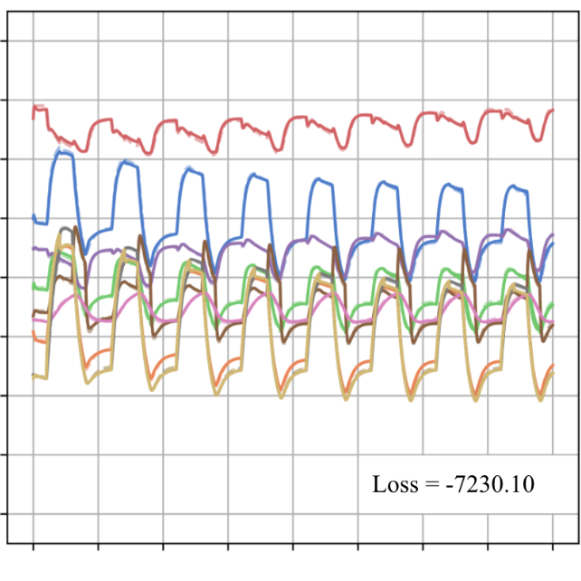

|

|
Inferring Synaptic Weight Dynamics with a Circuit Simulator (Honours Thesis)
This thesis contributes the synaptic update rule finder (SURF), a framework for automatically inferring
the update rule and naive synaptic weights controlling the circuit underlying a given plastic behaviour,
from a time series of neural activity observations from that circuit over the course of learning in a
real organism.
|

|
Characterizing mPFC/BLA Activity in Rats Under Non-Stationary Stochastic Reward
The objective of this work is to characterize the neural activity within the medial prefrontal cortex (mPFC)
and basolateral amygdala (BLA) of rats, during a non-stationary two-armed bandit-style task. We performed
simultaneous multi-unit extracellular recording in the mPFC and BLA.
poster (CAN 2018) |

|